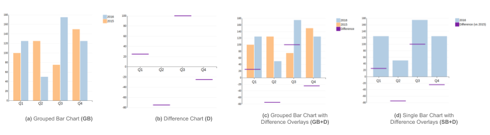

Arjun Srinivasan, Matthew Brehmer, Bongshin Lee, and Steven M. Drucker
An increasingly common approach to data analysis involves using information dashboards to visually compare changing data. However, layout constraints coupled with varying levels of visualization literacy among dashboard users make facilitating visual comparison in dashboards a challenging task. In this paper, we evaluate variants of bar charts, one of the most prevalent class of charts used in dashboards. We report an online experiment (N = 74) conducted to evaluate four alternative designs: 1) grouped bar chart, 2) grouped bar chart with difference overlays, 3) bar chart with difference overlays, and 4) difference chart. Results show that charts with difference overlays facilitate a wider range of comparison tasks while performing comparably to charts without them on individual tasks. Finally, we discuss the implications of our findings, with a focus on supporting visual comparison in dashboards